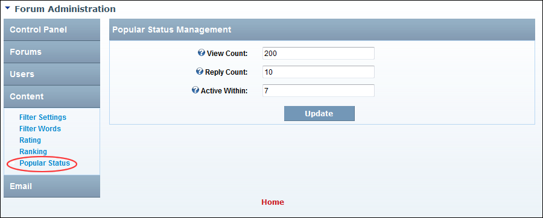

Managing Popular Thread Status
How to set the number of times a thread must be viewed and replied to be marked as a popular thread in the Forum module.
- Go to the Forum Administration page. See "Navigating to the Forum Admin Page"
- In the left-hand panel, select Content > Popular Status. This displays the Popular Status Management window.
- In the View Count text box, enter the number of views required before a thread is marked as popular - OR - leave blank if the number of views is not taken into account. The default setting is 200.
- In the Reply Count text box, enter the number of replies required before a thread is marked as popular - OR - leave blank if the number of replies not taken into account. The default setting is 10.
- In the Active Within text box, enter the number of days since the last post for a thread to be marked as popular. The default setting is 7.
-

Managing Popular Thread Status